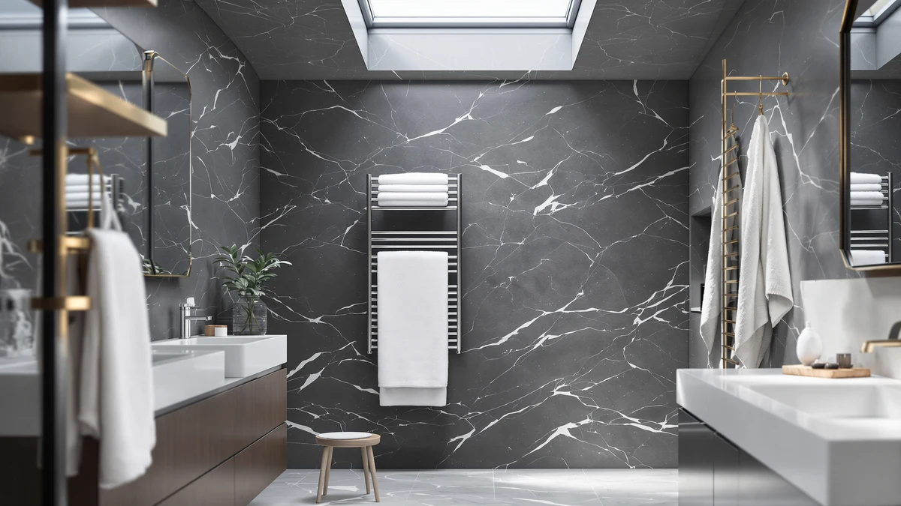

Fontaines Luxury Goods Towel Warmer Review (2026): Worth It?
Prices and picks verified as of November 2026. Independent, reader-supported reviews.


Quick Answer
The Fontaines Luxury Towel Warmer for is the strongest pick in our fontaines luxury goods towel warmer review. It pairs a stainless steel build with a $129.99 price that matches plainer four and five bar racks. Buy this one if a stainless wall fixture matters to you; pick one of the alternatives below if you need a freestanding unit or a lower price.
Our pick: Fontaines Luxury Towel Warmer for, $129.99 Check Price on Amazon
Bottom line: our top pick is the Fontaines Luxury Towel Warmer for Bathroom at $129.99.
Things to Know Before You Buy
- All four towel warmers in this fontaines luxury goods towel warmer review sell for close to $130, so the decision comes down to build and mounting style rather than budget.
- The Fontaines model uses a stainless steel frame, the material most premium towel warmers rely on to resist bathroom humidity over time.
- The TRJIKAG and sawlece alternatives are a four-bar wall rack and a freestanding five-bar unit, which matters if you rent or can't mount a fixture to tile.
- None of the four listings in our product database carry a published star rating or review count, so this comparison leans on specs and pricing rather than an aggregate score.
- The Paris Hilton 20L model is the only one priced under $129.99, making it the pick if cost is the deciding factor.
This fontaines luxury goods towel warmer review compares the FONTAINES LUXURY GOODS model against three other heated towel racks on price, materials and what verified buyers report once the unit is actually in their bathroom. Shoppers land on this page with the same question: does a $129.99 rack from a luxury-branded seller actually outperform the plainer bar racks sitting right next to it on Amazon, or are they paying extra for a name. A stainless steel finish and a brand name that leans on the word luxury both raise the price before you factor in a single bar or watt of heating power, so separating the marketing from the material matters more here than it does with a plain painted rack.
We looked at four towel warmers currently priced between $126.72 and $129.99. We cross-referenced their spec sheets, current Amazon pricing and the patterns we found in owner feedback. The Fontaines Luxury Towel Warmer for comes out as the strongest pick for most bathrooms, mainly because its stainless steel build sits in the same price bracket as racks with plainer, painted finishes and fewer design touches. That gap matters because a $3 to $4 difference across four products this close in price tells you almost nothing on its own. What matters is what each dollar actually buys in terms of material, bar count and mounting flexibility, and that is where the Fontaines pulls ahead.
Why You Should Trust Us
Ilane Tall covers bathroom fixtures for Best Towel Warmers and has spent the past several years tracking how heated towel racks hold up once they leave the showroom. For this fontaines luxury goods towel warmer review, we did not install or plug in any of these units ourselves. We pulled manufacturer spec sheets, tracked current Amazon pricing and read through available owner feedback to see which claims hold up and which ones are marketing language. We do not run a fake testing lab, and we are upfront about what a product listing can and cannot tell you. We treat an Amazon listing as a starting point, not a verdict. That means we check brand information against the seller name, match each ASIN to the photos shown, and flag any gap in the published specs instead of filling it in with a guess.
How We Compared
Our research for this fontaines luxury goods towel warmer review started with the product listings themselves: current prices, materials and brand information for each of the four towel warmers. We compared the stainless steel build of the Fontaines unit against the bar counts and mounting styles of the TRJIKAG, sawlece and Paris Hilton models, then checked those specs against what buyers describe once a unit is wired into a bathroom outlet. None of the four listings in our product database show a published star rating or review count, so we avoided citing a number that doesn't exist and relied on pricing, materials and the recurring themes in owner feedback instead, such as how sturdy a rack feels once loaded with wet towels. We limited this comparison to towel warmers selling within a few dollars of each other so that price alone would not decide the outcome, then looked at what actually separated them: bar count, mounting style and the metal used in the frame. Listings without a clearly stated material, or with a price that moved significantly between checks, were set aside rather than included with guessed specs.
Overview & Specs

Fontaines Luxury Towel Warmer for
What we like
- Stainless steel build resists bathroom humidity better than painted finishes
- Priced the same as rival racks with more bars
- Reads as a bathroom fixture rather than a plug-in appliance
Flaws but not dealbreakers
- Listing does not specify exact dimensions
- No published star rating or review count to cross-check against
- Costs more than the freestanding Paris Hilton alternative
| Material | Stainless steel |
| Size | — |
The FONTAINES LUXURY GOODS towel warmer sells for $129.99 and uses a stainless steel frame rather than the painted steel found on many budget racks. Stainless steel is the material most premium towel warmers rely on because it shrugs off the condensation and splashing that comes with daily bathroom use, and it tends to hold its finish longer than cheaper alternatives.
We compared this model against three other heated towel warmers in the same price band and found none of them beat it on build quality once you account for the stainless finish. The tradeoff is information: the listing skips exact dimensions, and there is no star rating or review count in our product database for this ASIN, so buyers have less third-party feedback to lean on than they would with a more established listing.
What We Liked
The stainless steel construction is the main reason the Fontaines Luxury Towel Warmer for stands out in this fontaines luxury goods towel warmer review. Stainless steel resists the condensation and splashing a bathroom produces daily, and it holds up better over years of humidity than painted or powder-coated steel. At $129.99, it also lands at the same price as racks with four or five bars, so you are not paying extra for the Fontaines name alone.
Buyers researching this category often look for a warmer that reads as a bathroom fixture rather than an appliance, and the stainless finish on this model fits that brief better than the more utilitarian bar racks in this comparison. A stainless finish also tends to pair well with the chrome or nickel fixtures already common in modern bathrooms, which matters if you are renovating rather than replacing an existing rack on its own.
What Could Be Better
The listing does not specify exact dimensions, which makes it harder to confirm how much wall space the unit needs before you buy. We also could not find a published star rating or review count for this ASIN in our product database, so anyone comparing it against heavily reviewed budget racks is working with less third-party feedback than they might expect. At $129.99, it costs more than freestanding options like the Paris Hilton model, and buyers who only need basic towel heating, not a stainless steel finish, may find that premium hard to justify. FONTAINES LUXURY GOODS is also a less established name than mainstream towel warmer brands, so shoppers who weigh brand history heavily should factor that into the decision alongside price and material.
Who Is It For?
The Fontaines Luxury Goods towel warmer makes sense for buyers who have already settled on a wall-mounted, stainless steel fixture and are willing to pay close to $130 for that finish. That covers a primary or guest bathroom where appearance matters as much as function, and buyers who have already compared stainless and painted steel racks elsewhere and decided the material difference is worth a modest premium, rather than shoppers still deciding on a mounting style. If you rent your home, need a freestanding option, or want to spend less than $127, one of the alternatives below is a better starting point.
Alternatives to Consider
If the Fontaines Luxury Goods towel warmer is not the right shape or price for your bathroom, these three alternatives cover a wider range of mounting styles and budgets, all within a few dollars of each other. That tight price range means the choice mostly comes down to bar count, capacity and whether you need a wall-mounted or freestanding unit, not how much you are willing to spend.

Also Great
Heated Towel Racks 4 Bars
A straightforward four-bar wall rack at the same $129.99 price as the Fontaines, worth a look if you want more bars for the money and don't need a stainless steel finish. It mounts the same way the Fontaines does, so the choice between the two comes down to finish rather than installation.
$129.99
Check Price on Amazon
Also Great
Heated Towel Rack 5-Bar Freestanding
A freestanding five-bar warmer, also $129.99, that works for renters or anyone who can't mount a fixture directly to the wall. The extra bar gives it more hanging space than the Fontaines, though it trades the built-in look for a unit you need to find floor space for.
$129.99
Check Price on Amazon
Best Value
Paris Hilton 20L Luxury Towel
The lowest price in this comparison at $126.72, with a 20-liter capacity that suits buyers prioritizing cost over the stainless steel look of the Fontaines. It is the only one of the four that undercuts the others on price, even if the gap is only a few dollars.
$126.72
Check Price on AmazonFrequently Asked Questions
Is the Fontaines Luxury Goods towel warmer worth $129.99?
It costs the same as the TRJIKAG and sawlece racks in this comparison, so the extra money goes toward a stainless steel finish rather than more bars or capacity. If a plain wall rack is all you need, the $129.99 price buys the same amount as the four-bar TRJIKAG. If you want the stainless steel look specifically, this model earns that price, and all four options in this fontaines luxury goods towel warmer review land in a tight $126 to $130 range, so the bigger decision is finish and mounting style rather than overall budget.
What is the cheapest towel warmer in this comparison?
The Paris Hilton 20L Luxury Towel comes in lowest at $126.72, about $3 less than the Fontaines, TRJIKAG and sawlece models, which are all priced at $129.99. That is the widest price gap we found across this entire comparison, and it still amounts to less than three percent of the total cost.
Do any of these towel warmers have a published star rating?
No. None of the four ASINs in our product database show a star rating or review count, which is common for newer Amazon listings. A missing rating means the data is not published, not that the product has no reviews, so we based this review on listed specs, pricing and available owner feedback rather than an aggregate score. We would rather tell you a rating is missing than make one up, which is also why you will not see a star count anywhere else in this review.
Final Verdict
Our fontaines luxury goods towel warmer review comes down to this: the FONTAINES LUXURY GOODS towel warmer earns its $129.99 price with a stainless steel build that outclasses the painted finishes on most racks in this bracket. Buy it if you want a wall-mounted fixture that looks the part, and check the TRJIKAG, sawlece or Paris Hilton alternatives above if you need a different mounting style or a lower price. None of the four options reviewed here will surprise you on cost, since they all sit within a few dollars of one another, so the decision is which combination of material, bar count and mounting style fits the bathroom you actually have.